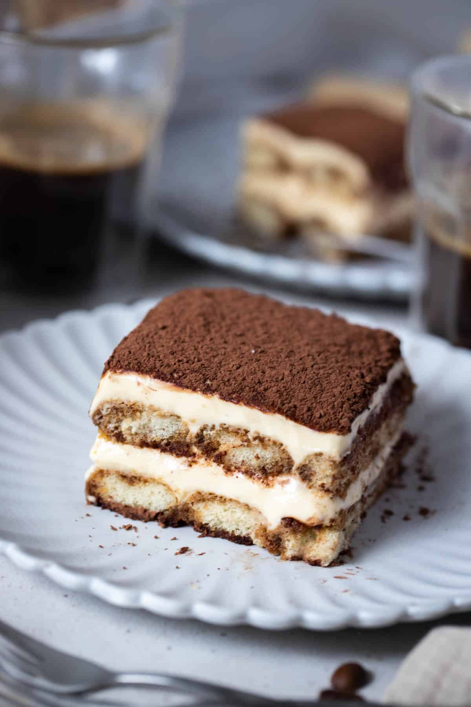

Tiramisu Recipe

Ingredients:
- 6 egg yolks
- 3/4 cup granulated sugar
- 1 cup mascarpone cheese
- 1 1/2 cups heavy cream
- 1 cup strong brewed coffee, cooled
- 1/4 cup coffee liqueur (e.g., Kahlúa)
- 24 to 30 ladyfingers
- Unsweetened cocoa powder, for dusting
- Chocolate shavings, for garnish (optional)
Steps:
- Prepare the Mascarpone Mixture:
- In a bowl, whisk together egg yolks and sugar until thick and pale.
- Add mascarpone cheese and mix until smooth.
- In a separate bowl, whip the heavy cream until stiff peaks form.
- Gently fold the whipped cream into the mascarpone mixture until well combined. Set aside.
- Prepare the Coffee Mixture:
- In a shallow dish, combine the brewed coffee and coffee liqueur.
- Assemble the Tiramisu:
- Dip each ladyfinger into the coffee mixture, ensuring they are soaked but not overly saturated.
- Arrange a layer of soaked ladyfingers in the bottom of a serving dish or individual glasses.
- Spread half of the mascarpone mixture over the ladyfingers, creating an even layer.
- Repeat the process with another layer of soaked ladyfingers and the remaining mascarpone mixture.
- Chill and Garnish:
- Cover the tiramisu and refrigerate for at least 4 hours or overnight to allow the flavors to meld.
- Before serving, dust the top with unsweetened cocoa powder and garnish with chocolate shavings if desired.
- Serve:
- Slice and serve chilled. Enjoy your delicious homemade tiramisu!